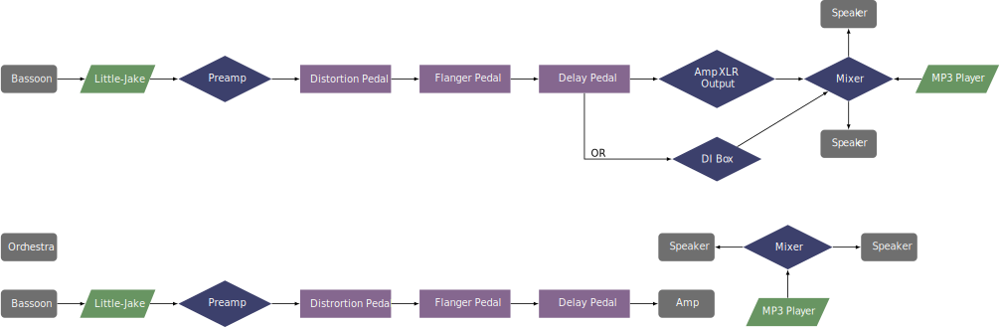

This three-movement work was composed for Martin Kuuskmann in 2004, and it exists in two forms. One is Essentially Tragic for electric bassoon, chamber orchestra, and samplestra (an mp3 file). The other is Electrically Tragic that samples the entire orchestra part, making it doable for a solo bassoonist with the samplestra accompaniment. For the bassoonist, it is the same; it is similar to the difference in playing a concerto with an orchestra or with a piano reduction. For the orchestral version, the instrumentation is for flute, oboe, clarinet, bass clarinet, contrabassoon, trumpet (in C), horn, trombone, piano, percussion, strings, and prerecorded electronics. The composer can be contacted directly for the performance materials at his website.
This piece is written for use with an electric bocal and three guitar pedals. The first movement uses a delay pedal, the second movement uses a flanger, and the third movement uses a distortion pedal. What makes the setup a little more complicated is that the samplestra also needs to be heard. This probably will bring a PA system into the setup to play the mp3 file. So the bassoonist can then choose to use an amp for their own sound and keep the mp3 separate, or to add a mixer to the setup to go through the same PA speakers. This could be done with either a DI box or with an XLR output from an amp. For performing with a chamber orchestra, it is probably better to use the amp and have the mp3 file as its own separate setup.
Two setups for this piece are shown below. The first is for bassoon with just the samplestra, and the second uses a live orchestra with the mp3 file as it's own setup. 
The main difficulty in this piece is the technical facility required in very fast runs, especially in the outer movements. There is also a lot of high register playing. The electronics are fairly simple. Each effect is triggered at the beginning of the movement. In the first movement the delay is turned off at one point and later turned on again. This would be a great piece for a talented performer who wants to venture into the world of effects pedals.
This piece features a lot of influence from popular music but has enough elements of classical art music to merit a place on any concert program. If the bassoonist can manage the technical aspects of the piece, it is sure to be a hit with most audiences.
©2024 by Benjamin Bradshaw
Logo ©2024 by Hannah Bradshaw